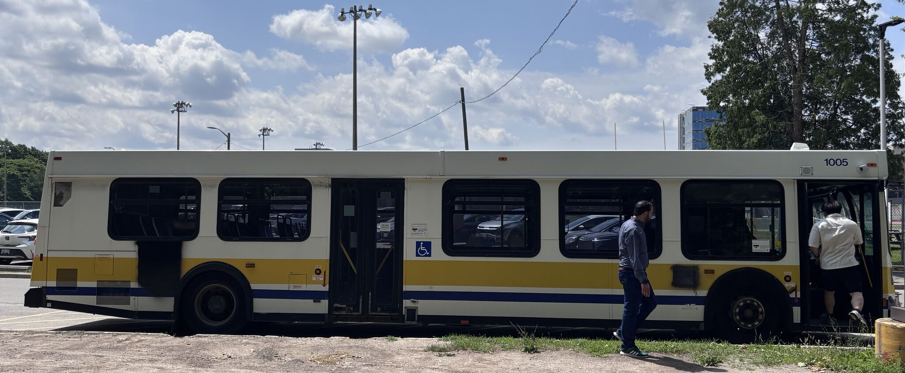
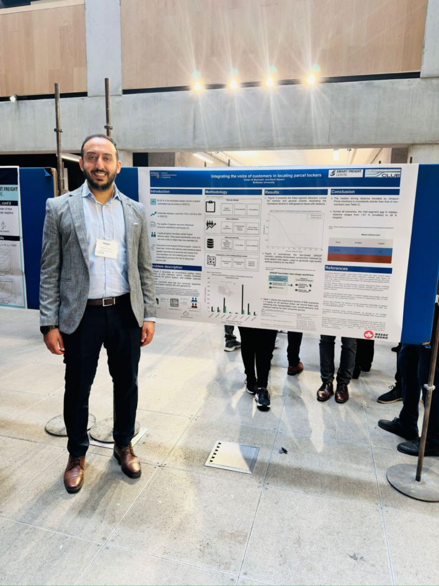

Behaviourally informed parcel-locker location
Embedding willingness-to-travel evidence from 2,617 Canadian respondents into capacitated facility-location decisions.
Industrial engineering · Empirical research · Data analysis
I use mixed methods, empirical research, optimization, and data analysis to improve decisions across supply chains, logistics, healthcare operations, and service systems.
01 · About me
I am a Ph.D. candidate in Computational Science and Engineering at McMaster University and Research Coordinator at the Smart Freight Centre.
My work connects industrial engineering with empirical and computational research. I combine surveys and interviews, administrative and open data, statistical analysis, mathematical optimization, and reproducible data workflows to study and improve healthcare, supply-chain, logistics, and other service systems.
02 · Experience
Purolator Chair in Sustainable Logistics and Supply Chain Management ↗
R. A. Malatest & Associates Ltd.
Mancor Industries
Saskatchewan Health Quality Council · University of Regina · German Jordanian University
03 · Data products & ETL
A reproducible neighbourhood-screening workflow built from official Toronto Open Data—covering ingestion, schema standardization, geocoding, dimensional outputs, structural validation, and an interactive planning interface.
Featured data engineering case study
A fully automated, local-first portfolio platform built with deterministic synthetic data. PostgreSQL, dbt Core, and Airflow produce governed marts for a generated Power BI Desktop project spanning executive, customer, delivery, and pipeline-audit views.
Local-first ELT
01 Synthetic sources 02 PostgreSQL 03 dbt marts 04 Power BI
A document-backed internal project-management workflow with privacy-aware data quality and reporting. Operational records remain private.
About WePick ↗Stakeholder coordination, pilot measurement, service-design review, multilingual accessibility, and privacy-aware redesign planning.
About CrowdFeeding ↗Work that connects source resolution, ETL, validation, analytical modeling, visualization, and implementation—not merely dashboard screens.
04 · Optimization research
Active work is described by scope, without unpublished manuscript titles, target journals, or submission dates.
Embedding willingness-to-travel evidence from 2,617 Canadian respondents into capacitated facility-location decisions.
Designing connected urban zones with endogenous district counts through decomposition and connectivity cuts.
Coordinating acquisition, retrofit, charging, scrappage, and delivery assignment under emissions policy.
Connecting curated evidence to bounded neighbourhood screening without overstating demand, emissions, or public support.
05 · Publications
Scientific Reports
Operations and Supply Chain Management
Transportation Research Part E
IEEE RTSI proceedings
Several additional manuscripts are submitted or approaching submission. Please contact me to learn more about ongoing research.
06 · News, media & recognition
Finalist in McMaster University’s Societal Impact Pitch competition for equitable and sustainable last-mile delivery research.
2023 · Media interviewInterview with TruckNews.com following a presentation at the Truck Training Schools Association of Ontario conference.
2022 · Newsletter articleCo-authored coverage in IFORS News of the Smart Freight Centre’s 2021 symposium.

07 · Presentations
2025Parcel lockers allocation with distance-sensitive demandCanadian Operational Research Society Conference
2023The technology and tellings of facial recognitionTruck Training Schools Association of Ontario Conference
2022Harnessing the power of big data toward a big data strategyCanadian Operational Research Society Conference
2020E-commerce logistics impacts on communitiesSmart Freight Symposium
2025Logistics of net-zero delivery zonesPurolator Innovation Showcase
2025Greening urban delivery through equitable fleet planningMcMaster Graduate Research Symposium
2025Integrating the voice of customers in locating parcel lockersITE Southwestern Chapter Mini Conference and City Logistics Symposium
2024Data-driven location of automated parcel lockersPurolator Innovation Showcase
08 · Teaching
I help students formulate an engineering problem, select an analytical method, interpret the result for action, and recognize model limits.
Previous areas include operations research, CPLEX laboratories, Arena simulation, numerical methods, human factors, engineering economics, supply chain management, and business analytics, as well as laboratory supervision for operations research, manufacturing science, and materials science engineering labs.